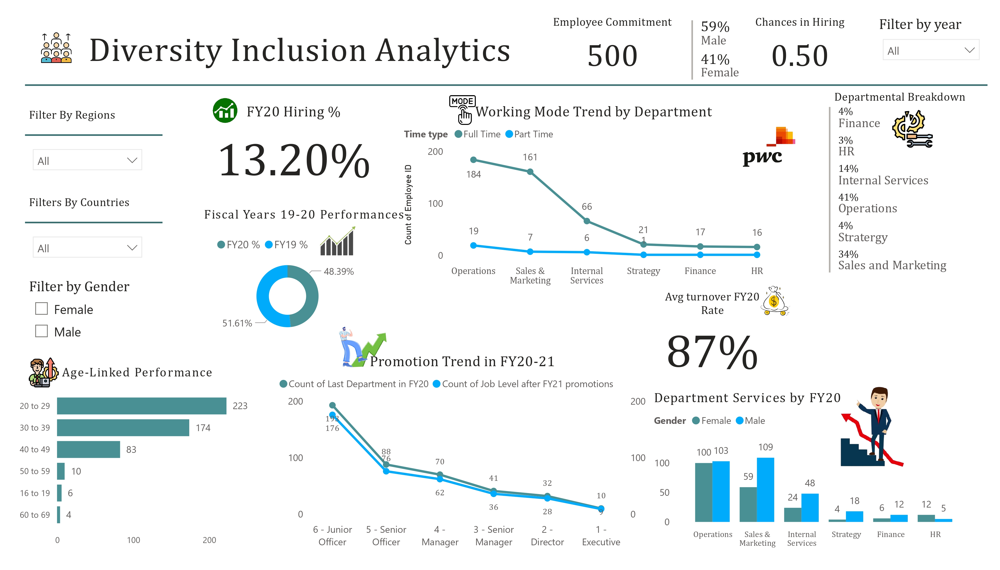

About me
A small introduction about myself
KEDARI SRI VENKATESH
Data Analyst & Interest in Data to Cook
I'm Kedari Sri Venkatesh, a final-year B.Sc. Computer Science student passionate about data analytics. With expertise in tools like Power BI, SQL, and Excel, I create impactful data models and visualizations to support data-driven decision-making. I have hands-on experience in dashboard creation, data storytelling, and business intelligence, demonstrated through diverse projects and certifications. My focus is on leveraging data to deliver actionable insights and drive operational efficiency. Passionate about continuous learning, I aim to contribute to innovative, data-centric solutions in the analytics domain.
Skilled in data analytics, visualization, and business intelligence with expertise in Power BI, SQL, and Excel. Certified in Python Essentials, Multi-Dimensional Data Modeling, Google Data Analytics Professional Certificate showcasing a commitment to continuous learning.
Skills & Expertice
I can say i’m quite good at
I am deeply focused on on understanding and fulfilling stakeholder needs . By aligning my skills with the expectations of stakeholders, I aim to ensure customer satisfaction and achieve successful outcomes . My ability to effectively address these needs has consistently contributed to the success of projects, building trust and delivering value.
"Success is not just meeting expectations, but exceeding them." - This reflects your focus on stakeholder satisfaction and delivering results beyond what is anticipated .
Certifications
My previous skill certificates
Coursera - Google
Google Data Analytics Professional Certificate
The Google Data Analytics Professional Certificate builds skills in data cleaning, visualization, and analysis using tools like R programming, Excel, SQL, and Tableau preparing learners for data-driven problem-solving in analytics careers.
Forage - Accenture
Data Analytics and Visualization Job Simulation
Completed the Data Analytics and Visualization Job Simulation with Accenture in collaboration with Forage , gaining hands-on experience in data cleaning, modeling, visualization, and storytelling to deliver actionable business insights.
Forage - PWC
Power BI Job Simulation
Completed the Power BI Job Simulation with PwC in collaboration with Forage , gaining practical expertise in data analysis, visualization, and creating impactful dashboards for business decision-making.
Education
My Academic Journey
Bachelor of Science in Computer Science
MOHAN BABU UNIVERSITY
Throughout my journey in pursuing a Bachelor of Science in Computer Science, I gained valuable skills in communication, teamwork, problem-solving, and more. I consistently demonstrated dedication and hard work, securing an overall GPA of 9.20 across my semesters.
After graduation, I have expanded my horizons by exploring various fields, seeking mentorship from successful professionals, and collaborating with them to foster personal and professional growth.
Portfolio
What I have done in my academic career
Atliq - Workforce Insights HR Analytics
Enhanced workforce insights through an HR analytics dashboard, driving strategic decision-making at AtliQ.
Skills Used - Data Cleaning, Data Modeling, Data Visualization.

Power BI Diversity Inclusion Dashboard
Created an insightful dashboard showcasing diversity metrics.
Skills Used - Data Cleaning, Data Validation, Data Processing.
Call Center Analytics Using SQL
This project leverages SQL to analyze call center data, aiming to enhance operational efficiency, identify performance trends, and improve customer satisfaction through data-driven insights.
Skills Used - Query data from different records, Data Exploration, Data Mining
Contact
srivenkatesh6.k@gmail.com
Address
Tirupati,
Andhra Pradesh